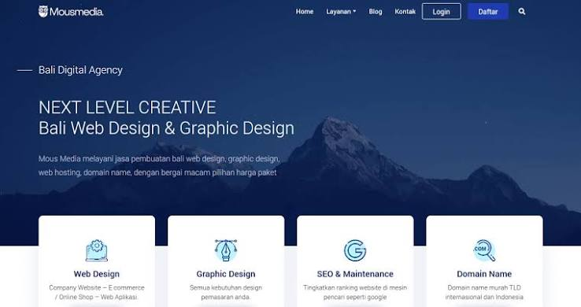
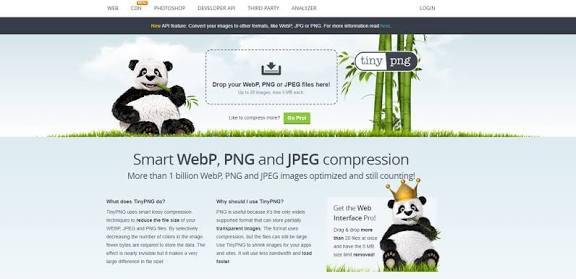

Desain Grafis(desain aplikasi)
Desain grafis adalah disiplin ilmu dan seni komunikasi visual yang memadukan elemen teks (tipografi), gambar, bentuk, ruang, dan warna untuk menyampaikan sebuah pesan, informasi, atau ide secara efektif, solutif, dan estetis kepada audiens tertentu.
Desain grafis bukan sekadar seni murni untuk kepuasan pribadi perupanya, melainkan sebuah alat pemecahan masalah (problem-solving tool). Setiap elemen yang diletakkan dalam sebuah desain harus memiliki alasan fungsional di balik aspek estetikanya.
Yang perlu diperhatikan
ketika mendesain
Penjelasan singkat mengenai kriteria dalam desain grafis
Dalam membuat desain grafis ada bebebarapa elemen visual utama yang membentuk sebuah UI (User Interface) diantaranya yaitu:
Tata Letak (layout) & grid cara menyusun dan menata posisi elemen-elemen di layar agar terlihat rapi, seimbang, dan terstruktur.
Skema warna (color palette) pemilihan kombinasi warna untuk membangun identitas produk, memperkuat estetika, dan mempengaruhi psikologi emosi pengguna.
Tipografi (typography) pemilihan jenis huruf (font), ukuran, ketebalan, dan jarak antar teks untuk memastikan tulisan di layar sangat mudah dibaca.
Tujuan dari materi ini adalah :
Tujuan utama mempelajari materi desain grafis adalah untuk menguasai kemampuan menyampaikan pesan, ide, atau informasi secara visual agar lebih menarik, jelas, dan mudah dipahami oleh audiens. Meningkatkan estetika dan fungsionalitas menciptakan karya yang tidak hanya indah dipandang tetapi juga memiliki fungsi jelas guna memecahkan masalah komunikasi visual.
Contoh desain yang sesuai dan yang tidak sesuai :
Contoh desain yang baik dan sesuai dengan kriteria

Desain tersebut dianggap baik dan sesuai kriteria karena memiliki tata letak (layout) yang rapi dan terstruktur melalui penggunaan kartu layanan yang seimbang, hirarki tipografi yang jelas sehingga judul dan informasi utama mudah dibaca, serta skema warna profesional dengan kontras yang baik antara latar belakang gelap dan teks terang, sehingga pesan utama dapat tersampaikan kepada pengguna dengan cepat dan efektif.
Contoh desain yang buruk dan tidak sesuai dengan kriteria

Desain tersebut dianggap kurang sesuai dengan kriteria UI modern karena penggunaan elemen dekoratif seperti rumput, bambu, dan panda yang berlebihan mengalihkan fokus pengguna dari fungsi utamanya. Selain itu, tata letak area kerja (dropzone) menjadi kurang menonjol akibat tertutup latar belakang yang padat, ditambah dengan tipografi serta kontras yang lemah pada teks penjelas di bagian bawah sehingga sulit dipindai dengan cepat.